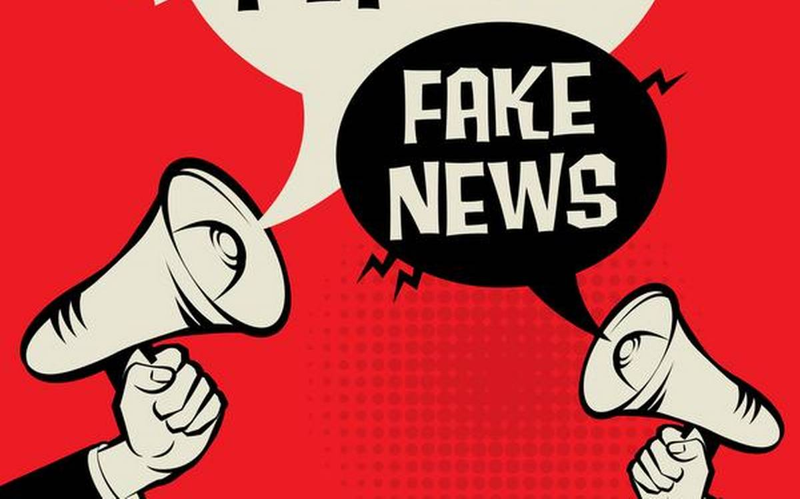

FAQs
Fake News: What is it And how to spot it

Source: Pexels.com
how to spot a fakenews
There are two kinds of fake news:
- Stories that aren't true. These are entirely invented stories designed to make people believe something false, to buy a certain product, or to visit a certain website.
- Stories that have some truth, but aren't 100 percent accurate. For example, a journalist quotes only part of what a politician says, giving a false impression of their meaning. Again, this can be deliberate, to convince readers of a certain viewpoint, or it can be the result of an innocent mistake. Either way, it quickly attracts an audience and can become entrenched as an "urban myth."